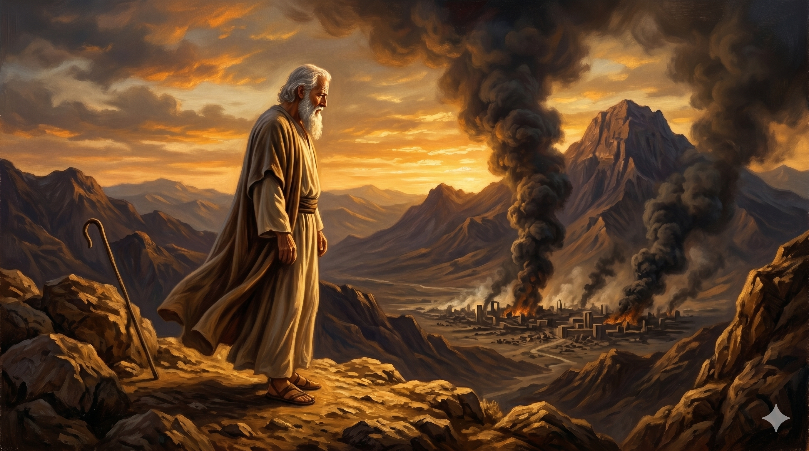

소돔 성을 바라보며 하나님 앞에 엎드려 중보하는 아브라함 — 자신이 살지 않는 도시를 위해 탄원하는 한 사람
아브라함이 가까이 나아가 이르되 주께서 의인을 악인과 함께 멸하시려 하나이까 그 성 중에 의인 오십 명이 있을지라도 주께서 그 곳을 멸하시고 그 오십 의인을 위하여 용서하지 아니하시리이까 주께서 이같이 하사 의인을 악인과 함께 죽이심은 부당하오며 의인과 악인을 같이 하심도 부당하니이다 세상을 심판하시는 이가 정의를 행하실 것이 아니니이까 — 창세기 18:23–25
소돔과 고모라의 죄악이 하늘에 사무쳤다는 하나님의 말씀을 들은 아브라함은 그 도시의 파멸 앞에서 침묵하지 않았습니다. 소돔은 조카 롯이 살고 있는 도시였지만, 아브라함의 중보는 단순한 가족 사랑을 넘어섰습니다. 그는 의인과 악인이 함께 심판받는 것이 하나님의 공의에 맞지 않는다는 신학적 확신을 가지고 하나님께 나아갔습니다. 이것은 신앙의 성숙에서 비롯된 대담함이었습니다. 고대 근동 문화에서 신 앞에 이처럼 논리적 탄원을 드리는 행위는 매우 이례적인 것으로, 아브라함이 하나님과 쌓아온 깊은 관계와 신뢰를 보여줍니다. 그는 "세상을 심판하시는 이가 공의를 행하실 것이 아니니이까"라는 담대한 질문으로 하나님의 성품 자체에 호소했습니다.
아브라함은 50명에서 시작하여 45명, 40명, 30명, 20명, 마침내 10명으로 수를 낮추며 여섯 번에 걸쳐 하나님께 간구했습니다. 하나님은 매번 응답하시며 "그렇게 하겠다"고 약속하셨습니다. 이 장면은 하나님의 인내와 자비가 얼마나 크신지를 생생하게 보여줍니다. 궁극적으로 소돔에서 의인 열 명도 찾을 수 없어 성은 멸망했지만, 하나님은 롯의 가족을 구원하심으로써 아브라함의 중보를 기억하셨습니다(창 19:29). 이 본문은 중보기도가 단순한 요청이 아니라 하나님의 마음과 나의 마음이 일치되는 영적 협력임을 가르쳐 줍니다. 또한 하나님은 기도하는 자를 통해 당신의 구원 계획을 이루어 가신다는 진리를 보여줍니다.

타오르는 소돔을 바라보는 아브라함 — 아침 빛 속의 기도의 자리, 하나님은 중보자를 기억하사 롯의 가족을 구원하셨습니다
우리는 중보기도를 너무 쉽게 포기합니다. 한두 번 기도하다가 응답이 없으면 "하나님의 뜻이 아닌가 보다"라고 스스로 결론 짓고 물러서곤 합니다. 그러나 아브라함은 여섯 번을 멈추지 않고 하나님 앞에 나아갔습니다. 하나님은 그 끈질긴 탄원을 거부하지 않으셨습니다. 오히려 매번 응답하시며 아브라함과 동행하셨습니다. 오늘 당신의 기도 목록에 아직 포기하지 말아야 할 사람이 있지 않습니까? 그를 위해 하나님 앞에 다시 나아가십시오. 중보기도는 가장 강력한 사랑의 행동입니다.
아브라함의 중보는 또한 공동체를 향한 책임감에서 나왔습니다. 그는 자신과 직접 관계없는 소돔 사람들을 위해서도 기도했습니다. 오늘날 우리도 내 가족, 내 교회, 내 이웃의 울타리를 넘어 더 넓은 세상을 위해 기도하도록 부르심을 받았습니다. 타락한 사회와 거짓된 문화 앞에서 "하나님, 저 곳에도 의인이 있습니다. 기억해 주십시오"라고 담대하게 중보하는 사람이 필요합니다. 하나님의 공의와 자비를 믿기에 기도할 수 있고, 그 기도가 역사를 움직입니다.
아브라함은 하나님이 심판을 결정하신 도시를 위해서도 기도를 멈추지 않았습니다.
당신이 포기한 그 기도, 응답 없다고 접어 둔 그 탄원을 다시 꺼내십시오.
하나님은 오늘도 "그렇게 하겠다"고 말씀하시는 분입니다 — 당신이 나아오기를 기다리십니다.